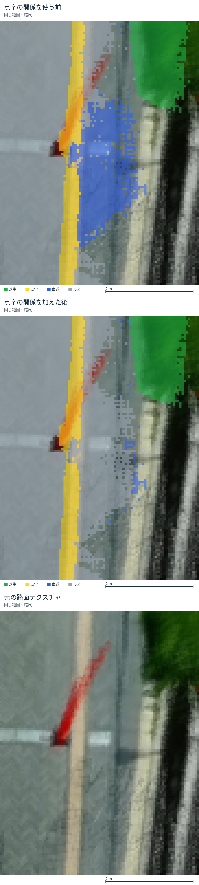
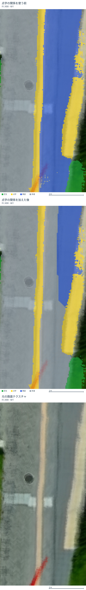
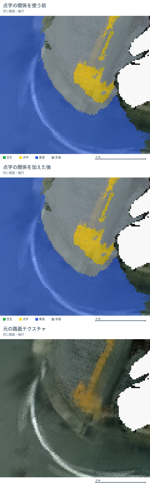

上：追加前／中：点字の関係を追加／下：元の路面テクスチャ。連続した点字の途中は歩道の手掛かりにします。端点・分岐・広い警告部は手掛かりから除外します。点字の両側を無条件に歩道にする処理ではありません。点字・芝生・元のRGBは保持しています。
比較版の全体地図・3種類の画像


同じ記録で16条件を試した探索結果です。切り出した領域での比較であり、独立した正解データによる精度評価ではありません。既存の全体地図も保持しています。